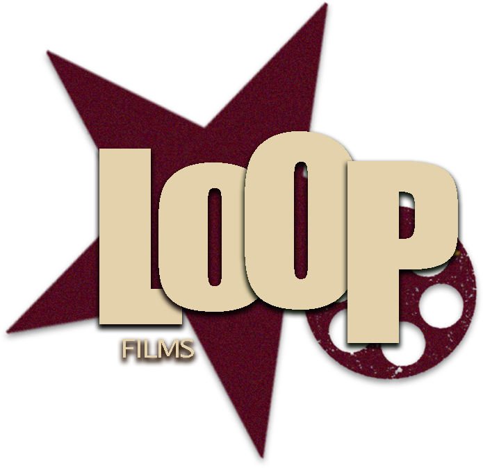
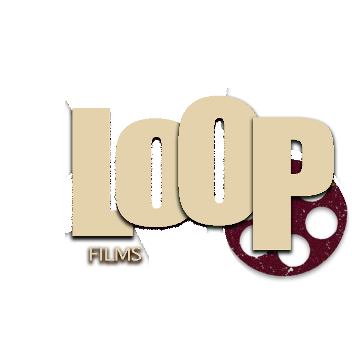
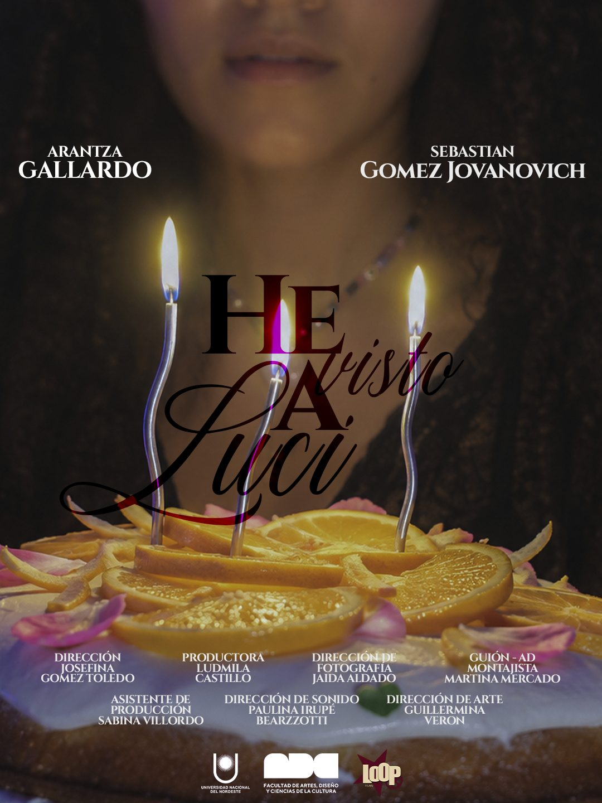

Cortometrajes
Ficción de autor, de la idea a la copia final.


En el festejo de sus 21 años, Lucía (20) recibe un collar de parte de su amigo Lautaro (20) que desata una serie de sucesos inexplicables y un progresivo deterioro físico.
Una productora universitaria de Corrientes
LoopFilms es una productora universitaria emergente enfocada en la creación de contenidos cinematográficos independientes. Buscamos dar voz a historias jóvenes, explorando nuevas narrativas y formatos visuales a través de la experimentación y el trabajo colaborativo.
Somos seis estudiantes de la Tecnicatura en Diseño de Imagen, Sonido y Multimedia de la FADyCC (UNNE), en Corrientes Capital.
Nos ocupamos de todo el proceso: guion, rodaje, sonido, arte y montaje.
Ficción de autor, de la idea a la copia final.
Piezas cortas para presentar un proyecto.

El tono de una película en un par de minutos.
He visto a Luci
En el festejo de sus 21 años, Lucía (20) recibe un collar de parte de su amigo Lautaro (20) que desata una serie de sucesos inexplicables y un progresivo deterioro físico. Cuando el objeto es apartado y la calma parece regresar, su reaparición en la habitación de Lucía revela que la pesadilla continúa.
¿Tenés una historia para contar o un proyecto que necesita teaser o tráiler? Escribinos y lo charlamos.
Se encuentra en formación en la Tecnicatura en Diseño de Imagen, Sonido y Multimedia en la UNNE. En el marco de su formación, participó en diversos proyectos académicos desempeñándose en los roles de Dirección de Arte, Dirección de Fotografía e Iluminación. Estas experiencias le permitieron desarrollar herramientas en planificación y manejo de tiempos dentro del set, fortaleciendo su capacidad para organizar procesos de trabajo y acompañar dinámicas de producción.
Su enfoque se centra en sostener estructuras claras que articulen lo creativo con lo técnico, acompañando los procesos desde una lógica de orden que permita la transformación dentro de la puesta.
Actualmente continúa su formación como directora, guionista y montajista del cortometraje He visto a Luci, producido por Loop Films.
Realizadora audiovisual en formación, especializándose en el área de Producción general y ejecutiva. Su enfoque profesional se destaca por la optimización de recursos a través de la gestión de alianzas estratégicas y scouting de locaciones, logrando un equilibrio entre la propuesta estética del proyecto He visto a Luci y las posibilidades presupuestarias.
En el ámbito de la ficción, lideró la producción de diversos proyectos. Su perfil resolutivo se enriquece con experiencia en gestión cultural en el Museo de Arte Contemporáneo de Corrientes (MACC), comunicación digital y oratoria, habilidades clave para la negociación y el liderazgo de equipos de trabajo.
Es una realizadora audiovisual en formación. Su perfil se centra en la construcción de atmósferas visuales y relatos vinculados a la juventud, el arte y la cultura. Se desempeñó como Ayudante de Cámara en el documental Vivir Bailando y como Asistente de Dirección en el videoclip Soñé que venías. También participó en producciones audiovisuales realizadas en el Fogón de los Arrieros, explorando identidad y expresiones culturales del nordeste argentino.
Complementó su formación con estudios en artes plásticas en una academia local. Sus proyectos combinan una propuesta visual marcada con narrativas humanas. Actualmente se desempeña como Directora de Fotografía en el cortometraje dramático He visto a Luci, producido por Loop Films.
Es una realizadora audiovisual en formación, con especial interés en el área sonora y una sólida base técnica en diseño y registro de sonido.
Se desempeñó como sonidista en el cortometraje de suspenso El ruido de abajo, participando en la captura, supervisión y cuidado de los detalles sonoros, y en el sector de iluminación en Soñé que venías, contribuyendo a la construcción de la atmósfera narrativa del proyecto.
Además, cuenta con experiencia en las áreas de cámara e iluminación, habiendo trabajado como camarógrafa y asistente de iluminación en videoclips y producciones documentales. Su perfil se caracteriza por la versatilidad, el compromiso con el trabajo en equipo y una mirada sensible hacia la construcción estética y narrativa audiovisual.
Nació en Corrientes en el año 2003. Su formación se caracteriza por su transdisciplinariedad y las artes.
Actualmente cursa de manera simultánea la Tecnicatura en Diseño de Imagen, Sonido y Multimedia (FADyCC - UNNE), la Tecnicatura Superior en Canto (Instituto Superior de Música “Carmelo H. De Biasi”) y la Tecnicatura en Gestión de la Industria Musical en la Universidad Tres de Febrero. Desde temprana edad ha desarrollado habilidades en guitarra, piano y danza, alcanzando el título de Profesorado de Expresión Corporal a los 18 años.
Además de su perfil artístico, mantiene una participación activa en el ámbito deportivo como integrante del equipo de remo del Club Regatas Corrientes. Esta combinación de disciplinas define su perfil como una realizadora integral en constante búsqueda de nuevos lenguajes expresivos.
Durante su formación académica tuvo la oportunidad de participar en diferentes producciones audiovisuales, desempeñando diversos roles que le permitieron adquirir experiencia y fortalecer sus conocimientos en el área.
En el cortometraje de ficción La Última Porción se desempeñó como Productora, mientras que en el documental Catalino Cuenca asumió el rol de Directora. También participó como Asistente de Dirección en el videoclip No Tenemos Reloj. Estas experiencias le permitieron desarrollar habilidades de organización, coordinación y trabajo en equipo, fundamentales para el ámbito audiovisual.
Actualmente participa como Asistente de Producción en el cortometraje dramático He visto a Luci, una producción realizada por Loop Films, continuando su crecimiento y formación profesional dentro de la industria audiovisual.